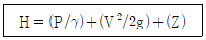
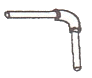
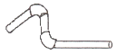
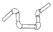
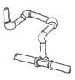
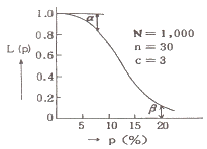

에너지관리기능장 (2014-07-20 기출문제)
1과목: 임의 구분
1. 포화수와 포화증기 혼합물의 밀도차를 이용하여 순환하는 방식을 이용하는 보일러가 아닌 것은?
- 벤슨(Benson) 보일러
- 야로우(Yarrow) 보일러
- 스털링(Stirling) 보일러
- 다쿠마(Dakuma) 보일러
(정답률: 66%)

2. 보일러의 압력계 부착 방법 설명으로 틀린 것은?
- 압력계와 연결된 증기관은 동관일 경우 안지름 6.5mm 이상 이어야 한다.
- 증기 온도가 210℃를 넘을 때에는 황동관 또는 동관을 사용하여서는 안 된다.
- 압력계에 연결되는 관은 물을 넣은 사이폰관을 설치하며, 그 안지름은 12.7mm 이상이어야 한다.
- 압력계의 콕 대신에 밸브를 사용할 경우에는 한눈을 개폐 여부를 알 수 있는 구조로 하여야 한다.
(정답률: 69%)
3. 보일러의 연소량을 일정하게 하고 과잉열량을 물에 저장하여 과부하 시 증기를 방출함으로써 증기부족을 보충시키는 장치는?
- 공기예열기
- 축열기
- 절탄기
- 과열기
(정답률: 78%)
4. 액화천연가스의 주 구성 물질은?
- C3H8
- C4H10
- CH4
- C2H6
(정답률: 86%)
5. 보일러의 열정산 방식의 설명 중 틀린 것은?
- 열정산시 시험부하는 원칙적으로 정격부하로 한다.
- 열정산의 기준온도는 시험시의 외기온도로 한다.
- 열정산에서는 보일러 효율의 정산방식으로는 입출열법 또는 열손실법으로 효율을 정산한다.
- 열정산 시 외기온도는 보일러실 외기 주위의 입구나 공기 예열기가 설치된 경우 그 출구에서 측정한다.
(정답률: 66%)
6. 보일러 주증기 밸브로 가장 많이 사용되며 유체의 흐름을 90°로 바꾸어 흐르게 하는 것은?
- 글로브 밸브
- 앵글밸브
- 체크밸브
- 게이트밸브
(정답률: 84%)
7. 난방부하가 4500kcal/h 인 방의 온수 방열기의 방열면적은 몇 m2로 하면 되는가? (단, 방열기 방열량은 표준방열량으로 한다.)
- 약 6m2
- 약 7m2
- 약 9m2
- 약 10m2
(정답률: 62%)
8. 가스와 공기를 강제혼합하는 방식으로 급속연소가 가능하며 고부하 연소에 적합하고 화염의 크기도 작은 가스버너는?
- 유도 혼합식 버너
- 내부 혼합식 버너
- 부분 혼합식 버너
- 외부 혼합식 버너
(정답률: 76%)
9. 보일러 관리 중 사고의 직접원인과 간접원인 중 간접원인으로 거리가 먼 것은?
- 불안전한 행동
- 기술적 원인
- 교육적 원인
- 정신적 원인
(정답률: 80%)
10. 최고사용압력이 1.4MPa인 강철제 증기보일러의 안전밸브 호칭지름은 얼마 이상으로 해야 하는가?
- 15mm
- 20mm
- 25mm
- 32mm
(정답률: 59%)
11. 장치 내부의 압력이 설정압력 이상으로 상승 시 압력을 외부로 방출시켜 장치의 파손을 방지하기 위해 설치하는 밸브는?
- 플로트 밸브
- 체크밸브
- 안전밸브
- 온도 조절 밸브
(정답률: 91%)
12. 연소온도에 대한 설명으로 틀린 것은?
- 연소용 공기 중 산소농도가 높아지면 이론연소 온도가 높아진다.
- 공기비가 커지면 연소가스 량이 증가하므로 이론 연소 온도에는 별로 차이가 생기지 않는다.
- 발열량이 커지면 연소가스 량도 많아지므로 이론 연소 온도에는 별로 차이가 생기지 않는다.
- 실제의 연소온도는 완전연소가 곤란하고 발생한 열이 노벽 등에 흡수되므로 이론 연소온도바다 낮아지는 것이 보통이다.
(정답률: 42%)
13. 펌프의 공동현상(cavitation)에 의하여 발생하는 현상으로 틀린 것은?
- 부식 또는 침식이 발생한다.
- 운전불능이 될 수도 있다.
- 소음 및 진동이 발생한다.
- 양정 및 효율이 상승한다.
(정답률: 92%)
14. 천장이나 벽, 바닥 등에 코일을 매설하여 온수 등 열매체를 이용하여 복사열에 의해 실내를 난방하는 것은?
- 대류난방
- 패널난방
- 간접난방
- 전도난방
(정답률: 88%)
15. 증발량이 일정한 경우 분출압력이 저압에서 고압으로 상승 시 보일러 안전밸브의 시트 단면적은?
- 넓어야 한다.
- 동일하게 한다.
- 좁아야 한다.
- 무관하다.
(정답률: 74%)
16. 보일러 배기가스 분석결과 O2 농도가 3.5% 일 때 공기비는? (단, 완전연소로 가정한다.)
- 1.1
- 1.2
- 1.3
- 1.5
(정답률: 54%)
17. 과열기의 특징으로 틀린 것은?
- 증기기관의 열효율을 증대시킨다.
- 증기관내의 마찰 저항을 감소시킨다.
- 적은 증기량으로 많은 일을 할 수 있다.
- 연소가스의 저항으로 압력손실이 적다.
(정답률: 64%)
18. 보일러 연소장치인 공기조절장치와 거리가 먼 것은?
- 윈드박스
- 보염기
- 버너타일
- 플레임 아이
(정답률: 68%)
19. 증기난방방식에서 응축수 환수방식에 의한 분류 중 진공 환수방식에 대한 설명으로 틀린 것은?
- 환수주관의 말단에 진공펌프를 설치한다.
- 환수관에서의 진공도는 50~100mmHg 이다.
- 방열량을 광범위하게 조절할 수 있어서 대규모 난방에 적합하다.
- 방열기 설치 위치에 제한을 받지 않는다.
(정답률: 75%)
20. 집진장치 중 가압한 물을 분사시켜 충돌 또는 확산에 의한 포집을 하는 가압수식에 속하지 않는 것은?
- 벤튜리 스크루버
- 사이클론 스크루버
- 세정탑
- 백 필터
(정답률: 82%)
2과목: 임의 구분
21. 보일러의 급수량이 2000ℓ/h, 관수 중의 허용 고형분이 1100ppm, 급수 중의 고형분이 200ppm 일 때 분출율은?
- 약 2.2%
- 약 22.2%
- 약 5.5%
- 약 55%
(정답률: 66%)
22. 입형 보일러의 특징 설명으로 틀린 것은?
- 설비비가 많이 들지만 보일러 효율이 높다.
- 좁은 장소에 설치가 용이하다.
- 전열면적이 작아 부하능력이 적다.
- 구조상 증기부가 좁아 습증기가 발생할 수 있다.
(정답률: 70%)
23. 보일러 자동제어에 대하여 '제어량-조작량'의 관계를 짝지은 것 중 틀린 것은?
- 증기압력 – 연료량, 공기량
- 증기온도 - 전열량
- 보일러수위 – 연료량, 증기량
- 노내압력 – 연소가스량
(정답률: 74%)
24. 지구온난화 방지를 위해 발효된 교토의정서에서 배출을 제한하는 온실가스의 종류가 아닌 것은?
- NH3
- CO2
- N2O
- CH4
(정답률: 63%)
25. 대류(對流)열전달 방식의 분류 중 옳은 것은?
- 자유대류와 복사대류
- 강제대류와 자연대류
- 열판대류와 전도대류
- 교환대류와 강제대류
(정답률: 81%)
26. 다음의 베르누이 방정식에서 P/γ항은 무엇을 뜻하는가? (단, H : 전수두, P : 압력, γ : 비중량, V : 유속, g : 중력가속도, Z : 위치수두)

- 압력수두
- 속도수두
- 공압수두
- 유속수두
(정답률: 87%)
27. 보일러 내부 청소 시 화약약품을 이용한 세관 중 산 세관에 이용되는 일반적인 염산의 농도는?
- 5~10%
- 11~15%
- 16~20%
- 21~25%
(정답률: 73%)
28. 신설 보일러의 플러싱(flushing)이 끝난 후 유지의 제거를 주목적으로 행하는 것은?
- 산 세관
- 유기산 세관
- 알칼리 세관
- 워싱(washing)
(정답률: 59%)
29. 내경 100mm의 파이프를 통해 10m/sec의 속도로 흐르는 물의 유량(m3/min)은 약 얼마인가?
- 2.6
- 3.5
- 4.7
- 5.4
(정답률: 50%)
30. 증기에 관한 기본적 성질을 설명한 것으로 옳은 것은?
- 순수한 물질은 한 개의 포화온도와 포화압력이 존재한다.
- 습증기 영역에서 건도는 항상 1보다 크다.
- 증기가 갖는 열량은 10℃의 순수한 물을 기준하여 정해진다.
- 대기압 상태에서 엔타피의 변화량과 주고받은 열량의 변화량은 같다.
(정답률: 54%)
31. 보일러 내처리제로 사용되는 약제 중 주로 슬러지 조정에 이용되는 것은?
- 리그닌
- 암모니아
- 수산화나트륨
- 탄산나트륨
(정답률: 68%)
32. 표준 대기압에 해당 되지 않는 것은?
- 760 mmHg
- 101325 N/m2
- 10.3323 mAq
- 12.7 psi
(정답률: 86%)
33. 플랜지패킹에 대한 설명 중 틀린 것은?
- 플랜지에 패킹시트가 있는 경우에는 그 크기만큼 패킹을 사용한다.
- 플랜지에 패킹시트가 없는 경우에는 죔 볼트 구멍의 안쪽에 접하는 크기로 사용한다.
- 소구경 플랜지는 죔 볼트 구멍의 피치원 지름에 접하는 크기로 사용한다.
- 제조자에서 제공한 플랜지용 패킹재가 있는 경우에는 그대로 사용한다.
(정답률: 57%)
34. 열역학 제2법칙과 관계가 없는 것은?
- 열이동의 방향성
- 제2종 영구기관
- 엔트로피 증가
- 일과 에너지의 변환
(정답률: 60%)
35. 보일러에서 연소 배기가스의 CO2 성분을 측정하는 주된 이유는?
- 연소부하를 계산하기 위하여
- 연료 소비량을 알기 위하여
- 연료의 구성 성분을 알기 위하여
- 공기비를 알기 위하여
(정답률: 78%)
36. 여러 가지 물리량에 대한 설명으로 틀린 것은?
- 밀도는 단위체적당의 중량이다.
- 비체적은 단위중량당의 체적이다.
- 비중은 표준 대기압에서 4℃ 물의 비중량에 대한 유체의 비중량의 비(比)이다.
- 유체의 압축률은 압력변화에 대한 체적변화의 비(比)이다.
(정답률: 73%)
37. 안지름 0.1m, 길이 100m인 파이프에 물이 흐르고 있다. 파이프의 마찰손실계수를 0.015, 물의 평균속도가 10m/s 일 때 나타나는 압력손실은? (단, 물의 비중량은 1000kg/m3, 중력가속도는 9.8m/s2 이다.)
- 약 5.65 kg/cm2
- 약 6.65 kg/cm2
- 약 7.65 kg/cm2
- 약 8.65 kg/cm2
(정답률: 46%)
38. 다음 보일러 청관제의 역할 중 거리가 가장 먼 것은?
- 관수의 pH 조정
- 관수의 취출
- 관수의 탈산소작용
- 관수의 경도성분 연화
(정답률: 83%)
39. 보일러의 내면부식 발생 원인으로 틀린 것은?
- 급수의 수질 처리가 잘 되어 있지 않을 때
- 보일러수의 순환불량으로 국부적 과열을 일으킬 때
- 연료에 유황성분이 많이 포함되어 있을 때
- 보일러 휴지 중 보존법이 좋지 않을 때
(정답률: 70%)
40. 단위 중량당 엔탈피(enthalpyy)가 가장 큰 것은?
- 과냉각액
- 과열증기
- 포화증기
- 습포화증기
(정답률: 66%)
3과목: 임의 구분
41. 산업통상자원부장관 또는 시·도지사가 소속 공무원 또는 에너지관리공단으로 하여금 검사하게 할 수 있는 사항이 아닌 것은?
- 에너지 절약전문기업이 수행한 사업에 관한 사항
- 효율관리시험기관의 지정을 위한 시험능력 확보여부에 관한 사항
- 엔지 다소비사업자의 에너지 사용량의 신고 이행 여부에 관한 사항
- 에너지 절약전문기업의 경우 영업실적(연도별 계약 실적을 포함한다.)
(정답률: 86%)
42. 패킹재의 종류 중 합성수지 제품으로 내열범위가 –260~260℃인 것은?
- 테프론
- 아마존 패킹
- 네오프렌
- 모올드 패킹
(정답률: 64%)
43. 설치검사와 계속사용검사를 받는 검사대상기기는?
- 전열면적 30m2의 진공보일러
- 전열면적 9m2인 가스연소 관류보일러
- 전열면적 9m2인 기름연소 관류보일러
- 전열면적 30m2의 대기개방형보일러(무압보일러)
(정답률: 68%)
44. 강관 벤더기에 관한 설명으로 틀린 것은?
- 램(ram)식은 현장용으로 많이 쓰인다.
- 램(ram)식은 관 속에 모래를 채우는 대신 심봉을 넣고 벤딩을 한다.
- 공장에서 동일한 모양의 벤딩 제품을 다량 생산할 때 적합한 것은 로터리식(rotary)이다.
- 로터리(rotaryy)식 사용 시에는 관의 단면 변형이 없고 강관, 스테인리스관, 동관도 벤딩 가능하다.
(정답률: 78%)
45. 제조방법으로 수직법과 원심력법이 있으며, 내식성, 내구성이 좋아 수도용 급수관, 가스 공급관, 통신용 지하매설관 등에 사용되는 관은?
- 주철관
- 고압 배관용 탄소강관
- 배관용 탄소강관
- 압력 배관용 탄소강관
(정답률: 74%)
46. 다음 배간 중 스위블형 신축이음으로 가장 거리가 먼 것은?




(정답률: 89%)
47. 파이프에 관한 설명으로 틀린 것은?
- 호칭경은 일정한 등분으로 나뉘어 있다.
- 관이음의 부품들도 호칭경으로 표시된다.
- 호칭경이 없이 외경으로 관경을 표시한다.
- 관이음의 부품들은 국제적으로 표준화되어 있다.
(정답률: 82%)
48. 펌프, 압축기 등에서 발생하는 배관계 진동을 억제하는데 사용하는 지지구는?
- 행거
- 브레이스
- 턴 버클
- 리스트레인트
(정답률: 85%)
49. 일정규모 이상의 에너지를 사용하는 에너지다소비업자는 에너지사용기자재의 현황을 누구에게 신고해야 하는가?
- 대통령
- 산업통상자원부장관
- 에너지사용시설 지역 관할 시·도지사
- 에너지관리공단 이사장
(정답률: 64%)
50. 무기지 보온재 중 암면을 가공한 것으로 빌딩의 덕트, 천장, 마루 등의 단열재로 한 쪽 면은 은박지 등을 부착하였으며, 사용온도가 600℃ 정도인 것은?
- 로코트(rocoat)
- 홈 매트(home met)
- 블랭킷(blanket)
- 하이울(high wool)
(정답률: 83%)
51. 가스절단 장치에 관한 설명으로 가장 거리가 먼 것은?
- 독일식 절단 토치의 팁은 이심형이다.
- 프랑스식 절단 토치의 팁은 동심형이다.
- 중압식 절단 토치는 아세틸렌가스 압력이 보통 0.07 kgf/cm2 이하에서 사용된다.
- 산소나 아세틸렌 용기내의 압력이 고압이므로 그 조정을 위해 압력 조정기가 필요하다.
(정답률: 86%)
52. 증기트랩의 점검방법으로 틀린 것은?
- 배출상태로 확인
- 수작업으로 감지 확인
- 초음파 탐지기를 이용하여 점검
- 사이트 그라스를 이용하여 점검
(정답률: 82%)
53. 스트레이너의 형상에 따른 3가지 분류에 해당되지 않는 것은?
- P형
- U형
- Y형
- V형
(정답률: 69%)
54. 가스용접 시 변형방지를 목적으로 하는 조치로 적절하지 않은 것은?
- 가접을 한다.
- 예열과 후열을 한다.
- 구속을 한다.
- 전진법으로 용접한다.
(정답률: 82%)
55. MTM(Method Time Measurement)법에서 사용되는 1 TMU(Time Measurement Unit)는 몇 시간인가?
- 1/100000 시간
- 1/10000 시간
- 6/10000 시간
- 36/1000 시간
(정답률: 76%)
56. np관리도에서 시료군 마다 시료수(n)는 100이고, 시료군의 수(k)는 20, ∑np=77 이다. 이때 np관리도의 관리상한선(UCL)을 구하면 약 얼마인가?
- 8.94
- 3.85
- 5.77
- 9.62
(정답률: 42%)
57. 미국의 마틴 마리에타사(Martin Marietta Corp.)에서 시작된 품질개선을 위한 동기부여 프로그램으로, 모든 작업자가 무결점을 목표로 설정하고, 처음부터 작업을 올바르게 수행함으로써 품질비용을 줄이기 위한 프로그램은 무엇인가?
- TPM 활동
- 6 시그마 운동
- ZD 운동
- ISO 9001 인증
(정답률: 81%)
58. 그림의 OC곡선을 보고 가장 올바른 내용을 나타낸 것은?

- α : 소비자 위험
- L(P) : 로트가 합격할 확률
- β : 생산자 위험
- 부적합품률 : 0.03
(정답률: 71%)
59. 일정 통제를 할 때 1일당 그 작업을 단축하는데 소요되는 비용의 증가를 의미하는 것은?
- 정상소요시간(Normal duration time)
- 비용견적(Cost estimation)
- 비용구배(Cost slope)
- 총비용(Total cost)
(정답률: 85%)
60. 다음 중 단속생산 시스템과 비교한 연속생산 시스템의 특징으로 옳은 것은?
- 단위당 생산원가가 낮다.
- 다품종 소량생산에 적합하다.
- 생산방식은 주문생산방식이다.
- 생산서비는 범용설비를 사용한다.
(정답률: 78%)